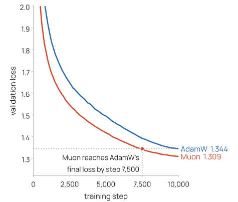
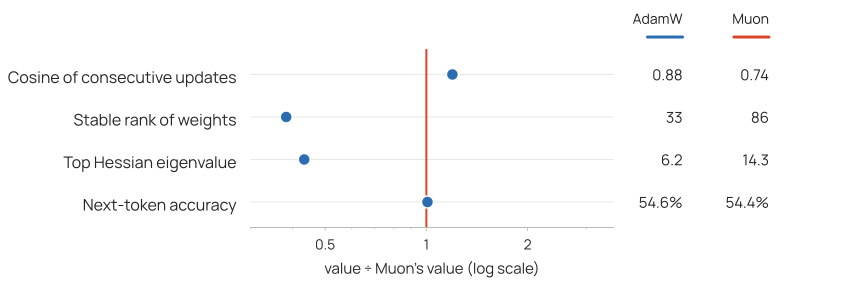
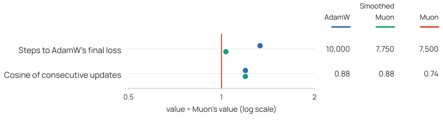
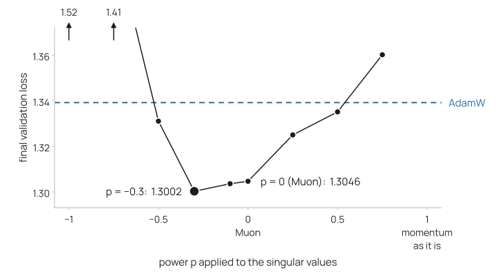
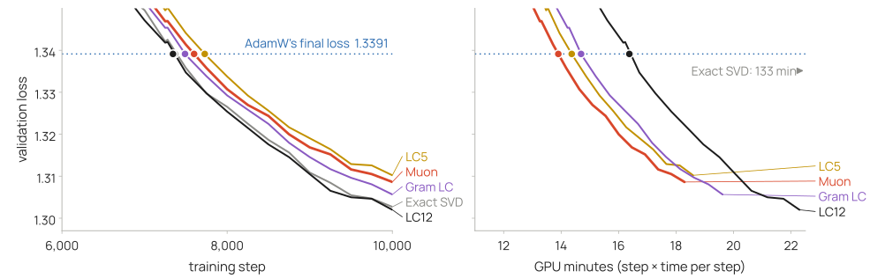
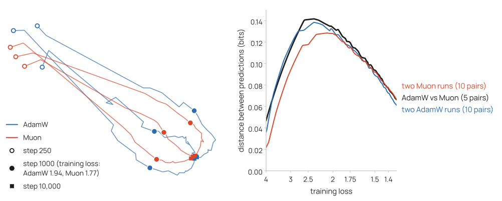
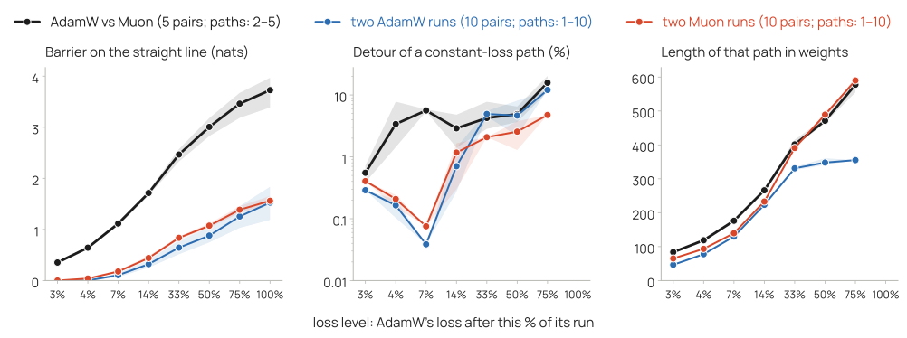

A 14M-parameter GPT on TinyStories, cross-entropy loss. Both optimizers start from the same weights and see the same batches, on five data orders.


Both at training loss 1.81 (AdamW near step 1450, Muon near step 860). Mean of data orders 0–2; bars: range over the orders.
Smoothed Muon steps along a running average of Muon's orthogonalized updates, tuned so that the cosine between consecutive steps is AdamW's. So this cosine does not explain Muon's speed.

Cosine at training loss 1.81, mean of data orders 0–2. Steps: mean validation loss of 5 data orders, models saved every 250 steps.

M: Muon's momentum. The update keeps Muon's norm.
Exact SVD, data order 0, learning rate 0.01 (Muon's). p = 1 would keep the momentum's spectrum as it is (not run); it is not AdamW.
LCk sums the first k Newton–Schulz iterates with weights fitted to s−0.3; Gram LC does the same on the Gram matrix.

Means over 5 data orders (exact SVD and LC12: 3). Dots: where each first reaches AdamW's final loss on data order 0. Time per step on one L40S: Muon 110 ms, LC5 112, LC12 134, Gram LC 118; exact SVD 1081 (older code).

Left: densMAP of each run's next-token predictions on held-out text, data orders 0–2. Right: Jensen–Shannon divergence of two runs' predictions at the same training loss, mean over pairs from data orders 0–4 (AdamW vs Muon: same order). At equal step AdamW and Muon are closer (0.102 against 0.131 bits at step 1000), so Muon does not just run AdamW's path faster.

Two models at the same training loss. Left: highest rise of the loss on the straight line between them. Middle: extra length of a 20-point path between them that stays at that loss. Right: that path's length, much closer across pairs than the barrier and the detour.